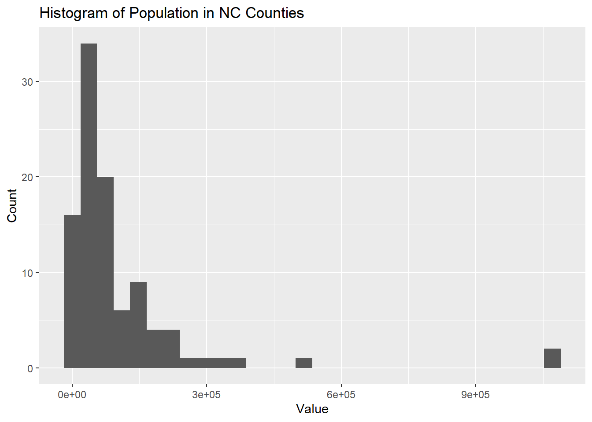
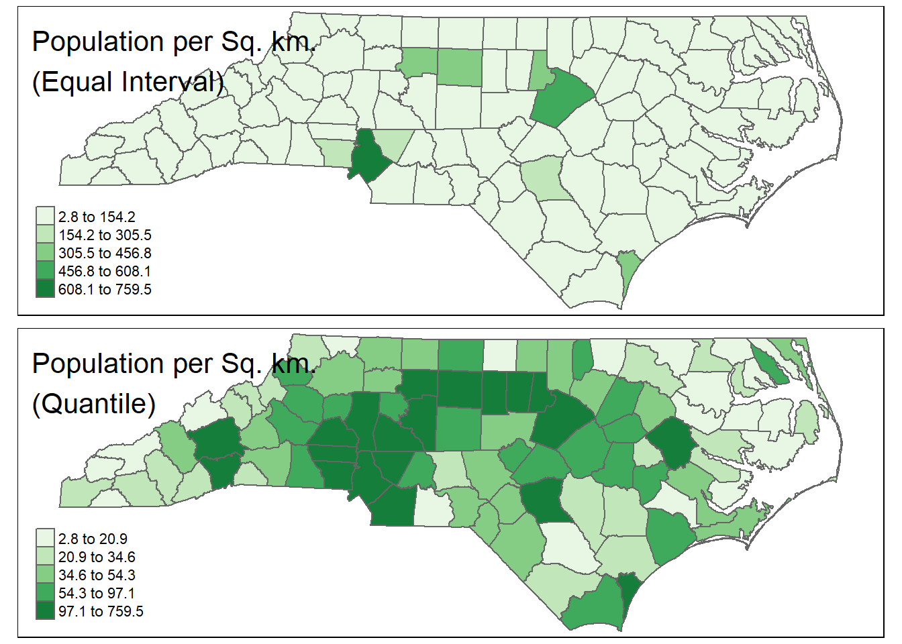

data/ folder, open the file
NC_Counties.prj with a program like Notepad or Notepad++.
.prj
file?This file contains projection metadata for the shapefile, such as datum, GCS, and units. These files are important to include as they provide the necessary information to display and project the data. Without this file, the system wouldn’t know the projection system, so you wouldn’t be able to do spatial analysis.
US_States layer, the fill argument
stands on its own, while for NC_Counties, it’s inside the
aes() function. Why is this the case – what’s the
difference between these two layers?In the case of US_States, we want to assign a single
“background color”, so we set the fill argument directly.
However, with NC_Counties, we wish to “map” the values in
population to the fill aesthetic, so we need
to include it within the aes() call.
coord_sf() function? Use
?coord_sf() to view documentation and usage, and describe its
arguments.coord_sf() allows us to set parameters when
visualizing sf objects. Some arguments include: xmin and
ymin, which are limits on the “bounding box” of our map;
expand, which ensures the data and axes don’t overlap;
crs, which sets the coordinate reference system, etc.
… This question is meant to get students to explore the
documentation, rather than just rehash what’s included in the module
itself.
ggplot2, generate a histogram of the distribution
of county population. Include axis labels, a title, and your name.## `stat_bin()` using `bins = 30`. Pick better value with `binwidth`.
tigris
or tidycensus packages, or other), create a choropleth map
using 5 classes, including a title and a legend. Create a map for both
quantile and equal-interval classification, and
briefly describe the difference in distribution between your two
maps.
Same basic maps as above, but with a different number of classes. Students should make 4 maps in total.
© 2022 brownhr & M. Sugg. v.0.0.7